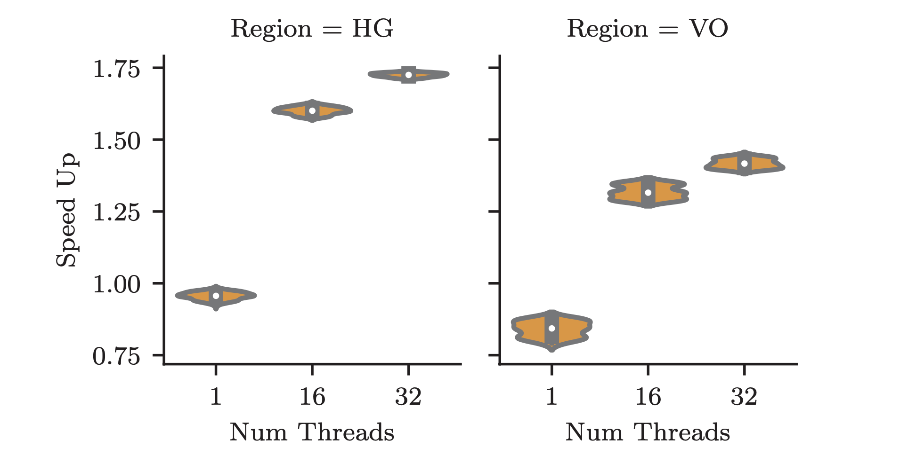

HPAC & HPAC-ML - Presentation
High Performance Approximate Computing
1. HPAC
1.1. Intro
HPAC paper explores Aprpoximate Computing Techniques for use in HPC applications using #pragmas. Techniques:
- Loop perforation
- Input Memoization
- Temporal Approximate Function Memoization
1.2. Loop Perforation
Skipping some loop iterations
< Collapse code block
#pragma approx perfo(small:5) for (i=0; i<N; i++) z += f(x[i], y[i])
- small: skip 1 iteration every N iterations
- large: do 1 iteration every N iteration
- rand: randomly skip every with probability p [gives less error]
- ini : skip first n% of iterations [gives better performance]
- fini: skip last n% of iterations [gives better performance]
1.3. Input Memoization
If the input are similar, return same output
< Collapse code block
#pragma approx memo(iact; 10; 0.5f) in(x[1:N], y[1:N]) out(z) for (i=0; i<N; i++) z += f(x[i], y[i])
memo(iact; tSize; threshold)
- tSize
- size of memoization table
- threshold
- euclidean distance threshold for activation of memoization
1.4. Temporal Approximation Function Memoization (TAF)
If consecutive output to a function are similar, then approximate with the last computed value for some iterations
< Collapse code block
for (t=0; t<N; t++) #pragma approx memo(taf; 10; 0.5f; 5) out(o) o = f(x[t], y[t]) z += o
memo(taf, hSize, threshold, pSize)
- hSize
- history buffer size
- threshold
- Threshold on Relative Standard Deviation (\(\sigma/\mu\)) to activate approximation
- pSize
- prediction size i.e. number of iterations to use approximation, after which fall back to accurate computation
1.5. Automated Tooling
< Collapse code block
#pragma approx in(x, y) out(z) memo perfo for (i=0; i<N; i++) z += f(x[i], y[i])
- Generates appropriate code
- Runs many variations (as per an spec file defining parameters ranges)
- Provides a pandas file with errors estimates for approximation method and parameter values
1.6. Results
1.7. Interesting Case

Figure 1: Speedup vs Threads for LULESH
- obtained further speedup by increasing number of OpenMP threads
- speedup = ratio of time for accurate and approx run, for same number of threads
- due to reduction in memory access due to approximation
1.8. Summary
HPAC paper studies Approximate Computing on HPC OpenMP applications
- creates Clang/LLVM compiler extension
- provides HPAC Tooling
- analyzes effectivness of approximate computing
Techniques:
- Loop perforation
- Input Memoization
- Temporal Approximate Function Memoization
2. HPAC-ML
2.1. Seperation of Concerns
HPAC-ML paper builds upon HPAC to provide features to
- Annotate code with #pragma
- Run the binary to collect data
- Train ML model on collected data
- Use the model for inference
- All with the same annotated code
So, application developer doesn't need to know much about ML model and ML developer doesn't need to concern themselves about application code.
They stay in their own languages and tools.
2.2. Same code, different execution path
< Collapse code block
#pragma approx ml(predicated:ml_mode) \ in(g) out(g_new) \ db("/path/data.h5") model("/path/model.pt") \ if(true) do_timestep(g, g_new)
- ml(predicated: ml_mode)
- define
bool ml_modeto control inference or data collection. Alternatively- ml(infer)
- always run ML model
- ml(collect)
- collect data by running accurate model
- in(g)
- input data (g)
- output(g_new)
- output data (g_new)
- db(file)
- path where data collected from accurate runs are stored
- model(file)
- path of the ML model which has both params and Network structure (in TorchScript)
- if(condition)
- run inference only if condition is true (useful when the decision depends on input)
2.3. Data mapping
- g and g_new is a N x M matrix (think of a grid)
< Collapse code block
#pragma approx tensor map(to: i_fun(g[1:N-1, 1:M-1])) #pragma approx tensor map(out: o_fun(g_new[1:N-1, 1:M-1])) #pragma approx ml(predicated:ml_mode) in(g) out(g_new) \ db("/path/data.h5") model("/path/model.pt") do_timestep(g, g_new)
2.4. Mapping function
< Collapse code block
#pragma approx tensor functor( i_fun: [i, j, 0:5] \ = ([i-1, j], [i+1, j], [i, j-1:j+2])) #pragma approx tensor functor(o_fun : \ [i,j, 0:1] = ([i, j]) )
- i_fun
- defines a map that creates a N x M x 5 tensor from N x M tensor (for NN input)
- o_fun
- defines an identity map
Mapping are specified in terms of tensor slices
2.5. Overview
Figure 3: HPAC-ML Overview
2.6. Automated Model Search
- Specify model structure (Feed forward, Convloution, hidden layers, kernel sizes)
- Parsl for model search automation and Adaptive Environments for Bayesian Search
2.7. Results
- Benchmark on 5 problems
- Good speedups obtained within error tolerance
Figure 4: Speedup and Error for HPAC-ML